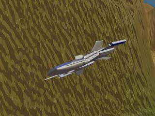
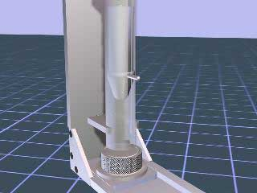

3D Modeling & Animation
Computer modeling and rendering program have come a very long way since these were produced. Computers have also come a long way, what used to take hours to be rendered on an early Pentium now can be done in real time.These projects were made using 3D Studio R3. For its day, it was a very nice modeling and rendering package available on PCs. The alternatives were packages that ran on SGI workstations. 3D Studio had a fairly limited modeler, especially when organic shapes were involved. In spite of that it was a very fun program to explore and tinker with. I hope some day explore programs like this on my spare time. Unfortunately the current version of 3D Studio is prohibitively expensive for simple home casual use.
Ship Chase Animation

Ship Chase Animation
The goal of this particular project was to incorporate five camera cuts in a twenty second animation. Taking notes was paramount for success because of the importance of keeping track of what I had done and needed to do. One of the hard parts was creating the landscape. Since 3D Studio R3 couldn't generate shapes like a mountainous terrain easily I had to use a Macintosh based program to do it.Ship Chase Animation
Someday I hope to re-do this one in a modern modeling and animation program.
Logo Animation
Logo Animation
I experimented with effects lighting in this animation. In addition to the standard light sources that created the ambient light, I had two additional lights that were scripted to be part of the animation. The first one was a "flashbulb" to fire when the gold "id" hit the blue block. The second light panned across the id logo showing off a metallic quality to the "id" part.
ALCOA Animation

ALCOA Animation
This was a group project. Keith Ballard, Ron Stephany, and I worked together to produce an animation that shows how to assemble and use a device used by ALCOA to test the durability of their bottle caps. Each one of us handled different aspects of the rendering. Ron was in charge of the modeling, Keith did the animation, and I was responsible for the materials and mapping. Being a part of this group was a very positive experience. Each member of the team contributed ideas and strengths to produce a quality animation. This project appeared in the book, "Mastering 3D Studio" by Professor William A. Ross for students on how to use 3D Studio.ALCOA Animation
Office Walk Through

Office Walk Through
Trailer Hitch Animation

Trailer Hitch Animation
The purpose of this project was to acquaint us with 3D Studio and how to use the 'Key info' and 'Track info' dialog boxes. Taking notes while producing each animation was stressed throughout this course. By taking detailed notes about each change, less time was spent backtracking when an idea didn't work out.